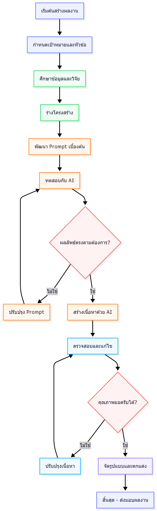
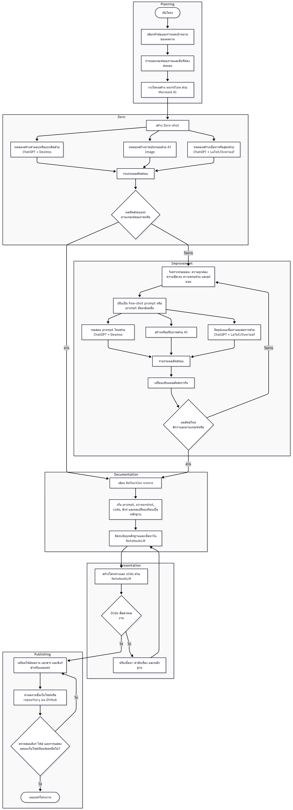
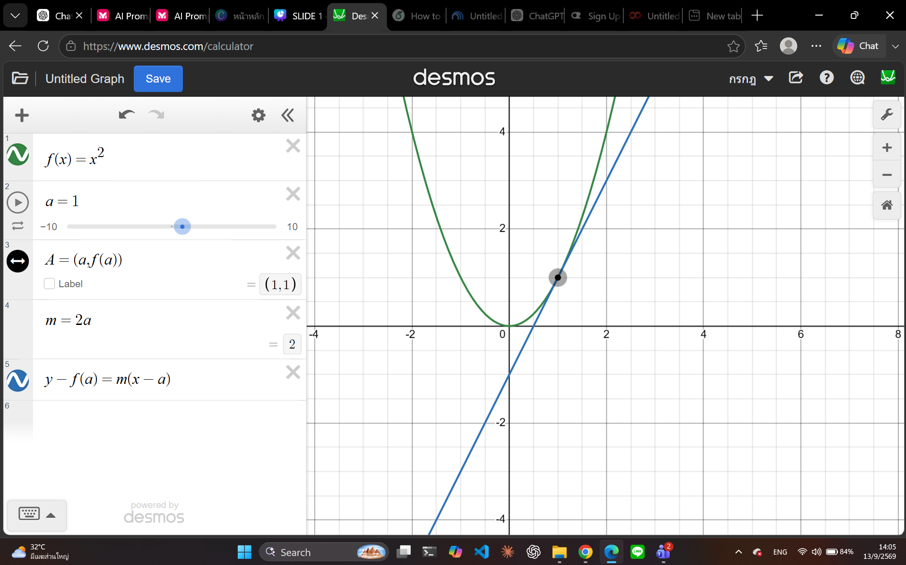
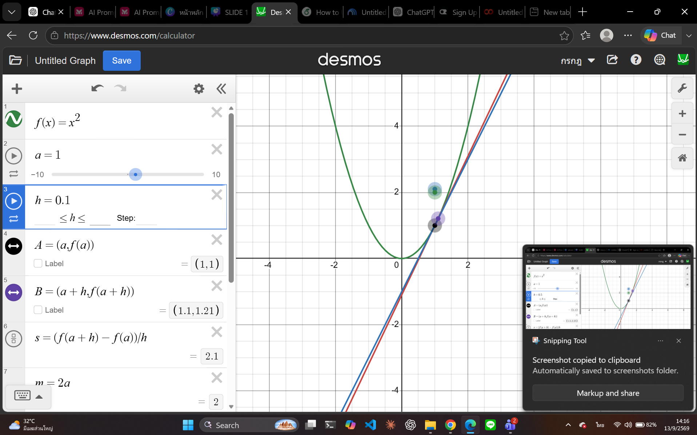
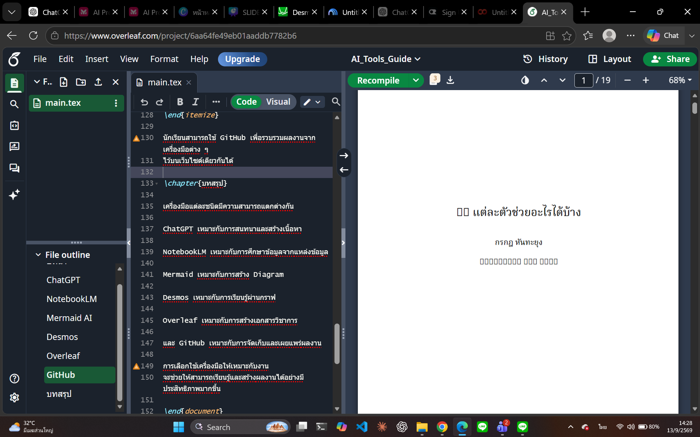
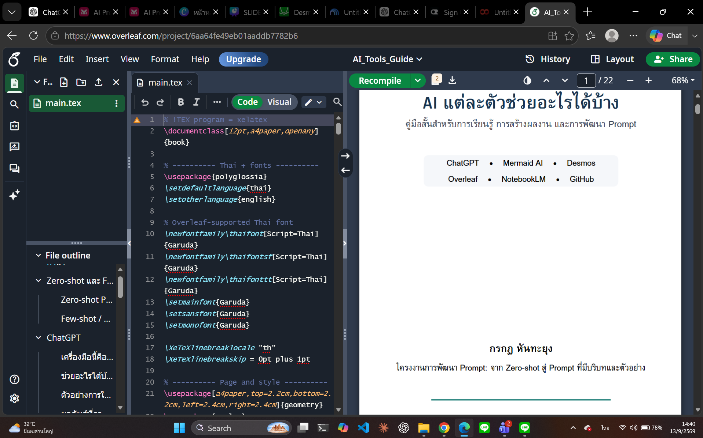
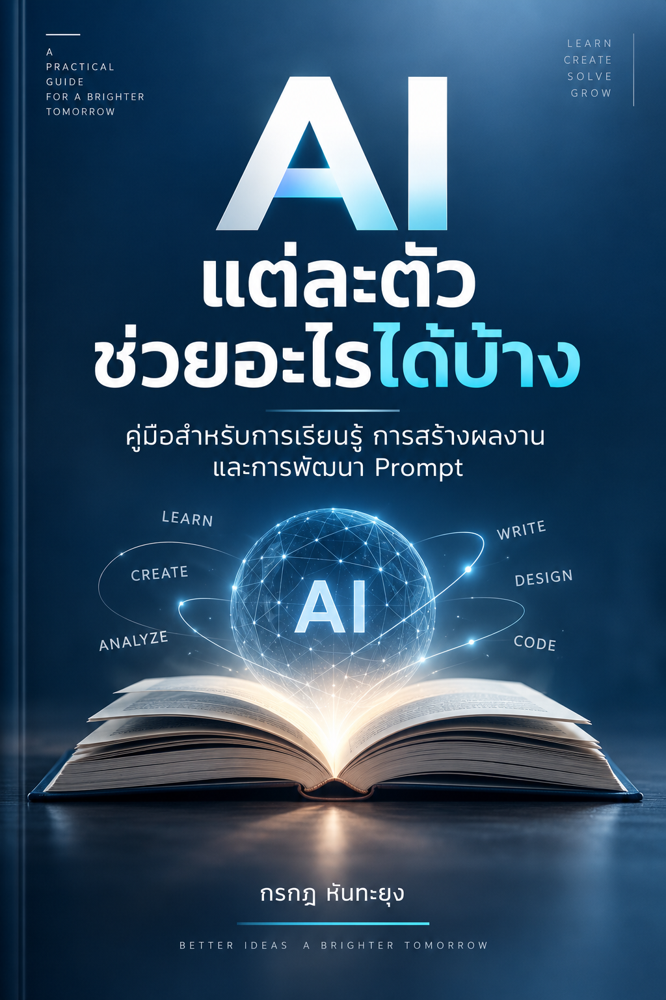
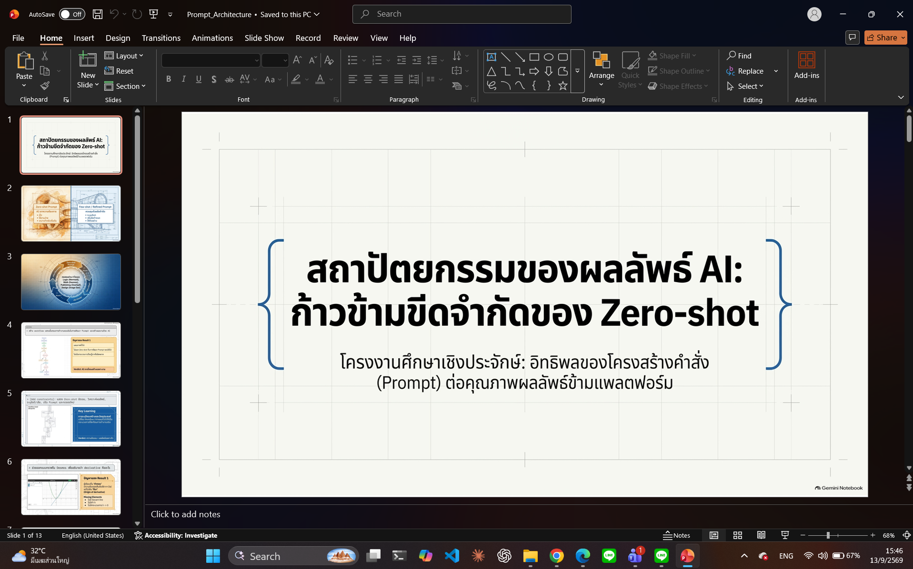
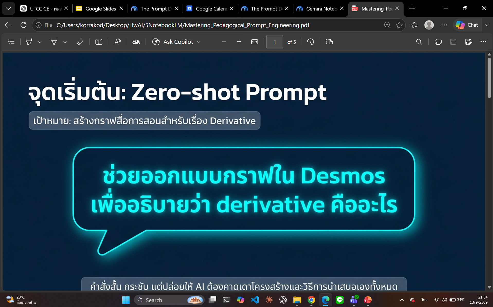

PROMPT DEVELOPMENT PORTFOLIO
From Zero-shot
to Refined Results
ทดลองพัฒนา Prompt ผ่านงานจริง 5 รูปแบบ — Workflow, Calculus Visualization, LaTeX Publishing, AI Image Generation และ Slide Presentation
FRAMEWORK
โครงสร้างการทดลองเดียวกันในทุกเครื่องมือ
แต่ละงานเริ่มจากคำสั่งสั้น ๆ แล้วใช้ผลลัพธ์จริงเป็น Feedback เพื่อพัฒนา Prompt รอบถัดไป
PROJECT 01
Mermaid AI — Workflow
สร้าง Workflow ที่อธิบายกระบวนการพัฒนา Prompt และการเรียนรู้จากผลลัพธ์จริง
“สร้าง workflow แสดงขั้นตอนการทำงานของฉันในการพัฒนา Prompt และสร้างผลงานด้วย AI”

AI สร้างลำดับงานพื้นฐานได้ แต่ยังไม่แยก Zero-shot / Refined Prompt และยังไม่เน้นการเรียนรู้จากข้อผิดพลาด

เพิ่มโครงสร้าง Zero-shot → วิเคราะห์ผล → ปรับ Prompt → Result 2 → Reflection เพื่อสะท้อนงานจริง
แผนภาพรอบแรกกว้างเกินไปและไม่สะท้อนวัตถุประสงค์ของงานนี้โดยตรง
เพิ่มข้อกำหนดให้แสดง Zero-shot, ข้อดี/ข้อเสีย, การปรับ Prompt, การทดลองใหม่ และการเปรียบเทียบผลลัพธ์
การระบุโครงสร้างและวัตถุประสงค์ เปลี่ยน Workflow จากแผนทั่วไปให้เป็นกระบวนการที่สะท้อนการทำงานจริง
PROJECT 02
ChatGPT + Desmos — Derivative
ใช้กราฟอธิบายว่า derivative มาจากไหน ไม่ใช่เพียงแสดงคำตอบสุดท้าย
“ช่วยออกแบบกราฟใน Desmos เพื่ออธิบายว่า derivative คืออะไร”

ได้กราฟ f(x)=x², จุด A และ tangent line แต่ผู้เรียนเห็นเพียงความชัน m=2a

เพิ่มจุด B, secant line, slider h และ difference quotient เพื่อเห็นกระบวนการ h → 0
เพิ่มจุด B, เส้น secant และ slider h ให้เห็นว่าเมื่อ h เข้าใกล้ 0 ความชัน secant เข้าใกล้ tangent พร้อมตัวอย่าง h = 1, 0.5, 0.1, 0.01
Prompt ที่ละเอียดขึ้นเปลี่ยน Desmos จาก “Graph Drawing Tool” เป็น “Interactive Learning Tool”
PROJECT 03
ChatGPT + Overleaf — Thai LaTeX Book
สร้างหนังสือภาษาไทยเรื่อง “AI แต่ละตัวช่วยอะไรได้บ้าง” ด้วย LaTeX ที่ใช้งานได้จริงบน Overleaf
“ช่วยเขียน LaTeX สำหรับหนังสือสั้น ๆ ที่อธิบายว่า AI แต่ละตัวช่วยอะไรได้บ้าง”

ภาษาไทยหลายส่วนเป็นสี่เหลี่ยม สารบัญและหัวบทมีปัญหา และ layout ยังเหมือนเอกสารพื้นฐาน

กำหนด XeLaTeX + Thai font + Unicode + โครงสร้างบท + prompt box + ตารางเปรียบเทียบ
Prompt รอบแรกบอก “เนื้อหา” แต่ไม่ได้ระบุ compiler, font, Unicode และ layout requirements
กำหนด XeLaTeX, ฟอนต์ไทย, สารบัญภาษาไทย, โครงสร้างบท, Prompt example, Zero-shot/Few-shot และตารางเปรียบเทียบ
โค้ดที่ Compile ได้ ≠ โค้ดที่ใช้งานได้จริง — Prompt ต้องระบุทั้งเนื้อหาและข้อจำกัดทางเทคนิค
PROJECT 04
AI Image Generation — Book Cover
สร้างปกหนังสือ “AI แต่ละตัวช่วยอะไรได้บ้าง” ให้ดูเป็นปกหนังสือจริง ไม่ใช่โปสเตอร์ประชาสัมพันธ์
“สร้างปกหนังสือหัวข้อ AI แต่ละตัวช่วยอะไรได้บ้าง”
องค์ประกอบเยอะ ไอคอนหลายจุด มีบุคคลเป็น visual หลัก และ negative space น้อย

ใช้แนวคิดภาพหลักเพียงหนึ่งภาพ ลด icon ไม่มีบุคคล และควบคุม Navy / White / Cyan
ปกแนวตั้ง, title เด่นที่สุด, subtitle ใต้ชื่อ, ภาพแนวคิดหลักภาพเดียว, เพิ่ม negative space, ไม่มีบุคคล, โทน Navy/White/Cyan และให้ดูเป็นหนังสือเทคโนโลยีด้านการศึกษา
Negative constraints สำคัญพอ ๆ กับสิ่งที่ต้องการ — เมื่อ AI ถูกตีกรอบมากขึ้น ผลลัพธ์จะมีความเป็นมืออาชีพมากขึ้น
PROJECT 05
NotebookLM — Slide Presentation
นำหลักฐานจากทุกการทดลองมาสร้างสไลด์นำเสนอที่เล่าเรื่อง Zero-shot → Refined Prompt ได้อย่างเป็นระบบ
“สร้างสไลด์นำเสนอจากข้อมูลทั้งหมดนี้”

จับ narrative ร่วมได้ดี แต่ยังย่อบางขั้นตอนมากเกินไป และยังไม่แยก 5 ขั้นตาม rubric อย่างชัดเจน

พื้นที่นี้เตรียมไว้สำหรับ Final deck หลังปรับ Prompt รอบถัดไป
Result 1 เล่าเรื่องได้ดี แต่ยังไม่แยก Zero-shot / Result 1 / Prompt รอบใหม่ / Result 2 / Reflection ชัดในทุกหัวข้อ
กำหนดจำนวนสไลด์ โครงสร้าง 5 ขั้นต่อหัวข้อ ใช้ prompt จริงและ screenshot จริง พร้อม Reflection ที่สอดคล้องกับหลักฐาน
Result 2 ของ NotebookLM จะถูกเพิ่มหลังสร้าง Final slide deck เพื่อให้เว็บไซต์นี้เป็นหลักฐานฉบับสมบูรณ์
FINAL REFLECTION
AI ไม่ได้รู้สิ่งที่อยู่ในความคิดเรา — Prompt คือสถาปัตยกรรมของผลลัพธ์
Zero-shot เหมาะสำหรับเริ่มต้นอย่างรวดเร็ว แต่เมื่อผลลัพธ์ถูกนำมาวิเคราะห์และเปลี่ยนเป็น Feedback เราสามารถเพิ่มบริบท ข้อจำกัด และตัวอย่างเพื่อเปลี่ยนผลลัพธ์ทั่วไปให้กลายเป็นผลลัพธ์เฉพาะงานได้